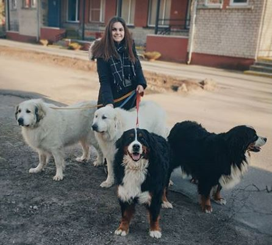

What is this all about?
I wrote the front end for this page. It will serve as my portfolio. My name is Arta Rundvalde and I like to be associated with all things digital. I am aware this currently looks like one of the first webpages on the internet, but I will try to keep it updated and aligned with my skills.
So, what have I done previously?
My educational journey
- From 09/2020 - Riga Technical university, Masters programme "Digital humanities";
- Riga Stradiņš university, bachelors study programme "Multimedia communication" - Class of 2019;
- Riga State Gymnasium No. 3 - Class of 2016
My work journey
- From 09/2020 - Digitisation department of National Library of Latvia
- 07/2019 - 08/2020 - Monitoring department of National information agency LETA
- 09/2017 - 09/2020 - Digitisation department of National information agency LETA
- 09/2015 - 10/2017 - Promoter in Promo Team Baltic
What else?
I made a cute documentary about therapy dogs that visit nursing homes for my bachelors thesis. You can watch it on Facebook.
I've done multiple smaller multimedia projects. You can see them here: A commercial photosession
(the projects section will continue to be updated)
These are the rules that I live by
- Keep your hopes high, but your expectations - low;
- Find out how to beat procastination later;
- Do your best or don't do at all;
- Sleep is either for the weak or for the week;
- Make sure you look confident, even if you don't know what you are doing!